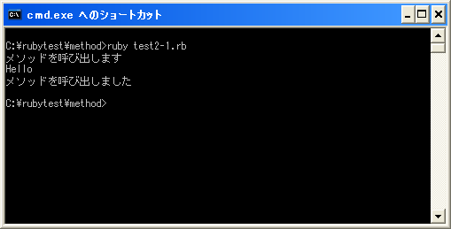

メソッドの定義と呼び出し
ではメソッドの定義方法を確認していきます。書式は次の通りです。
def メソッド名(引数1, 引数2, ...) 実行する処理 実行する処理 end
メソッドの定義は「def」から開始し「end」までとなります。メソッドは複数定義することができますので、識別するためのメソッド名を指定します。メソッド名を指定する場合は次の規則に従って下さい。
1) 1文字目は英文字かアンダーバー(_) 2) 2文字目以降は英数文字、アンダーバー
変数名などと異なり大文字の英文字で開始することも可能です。ただし大文字で開始するのはお勧めはできません。(他にも記号「+,-,*,/」が使われたメソッドなどもあり、ユーザーが再定義することも実際には可能です。ここではあまり詳しく見ていきません)。
またメソッドを呼び出す時には引数を指定することが可能です。引数を使用する場合はメソッド名の後の括弧()内に引数名をカンマ(,)で区切って続けて記述します。括弧は省略可能です。
具体的には次のように記述します。
def printHello
print("Hello¥n")
end
上記では、メソッド名「printHello」と言う名前のメソッドを定義しています。このメソッドが呼び出されると「Hello」とだけ出力します。
メソッドの呼び出し
定義されたメソッドを呼び出すと、処理がメソッド内に移りメソッド内に記述された処理が実行されます。そしてメソッドの最後まで処理が終わると、メソッドを呼び出した次の行へ処理が戻ります。
メソッドを呼び出す時の書式は次の通りです。
オブジェクト.メソッド名(引数1, 引数2, ...)
メソッドはクラス内で定義され、そのクラスから作成されるオブジェクト(レシーバーと呼ばれます)に対して行わせたい処理を記述するものです。その為、メソッドを呼び出す時には対象となるオブジェクトと実行させるメソッド名を指定して呼び出します。
トップレベルに定義されたメソッドであっても同じなのですが、トップレベルに定義されたメソッドはレシーバーを省略して次のように呼び出します。
メソッド名(引数1, 引数2, ...)
では定義されたメソッドを呼び出してみます。
def printHello
print("Hello¥n")
end
printHello
上記では「printHello」として呼び出していますが、丁寧に記述する場合は「printHello()」となります。これは他のメソッド呼び出しの場合と同じです。(ただしメソッド名を英文字の大文字で開始した場合には括弧は省略できません)。
メソッド定義の位置
メソッドは実際に呼び出されるよりも前に定義されていなければなりません。例えば次のようなプログラムはエラーとなります。
printHello
def printHello
print("Hello¥n")
end
上記のようにメソッド呼び出しがメソッドの定義よりも前に実行されると「undefined local variable or method」と言うエラーが表示されます。
メソッドの定義はメソッドが呼び出されるよりも前に記述して下さい。
サンプルプログラム
では簡単なプログラムで確認して見ます。
#! ruby -Ku
require "kconv"
def printHello
print("Hello¥n")
end
print(Kconv.tosjis("メソッドを呼び出します¥n"))
printHello
print(Kconv.tosjis("メソッドを呼び出しました¥n"))
上記のプログラムを「test2-1.rb」として保存します。文字コードはUTF-8です。そして下記のように実行して下さい。

( Written by Tatsuo Ikura )

著者 / TATSUO IKURA
初心者～中級者の方を対象としたプログラミング方法や開発環境の構築の解説を行うサイトの運営を行っています。